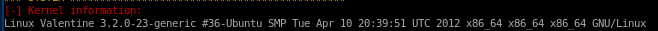
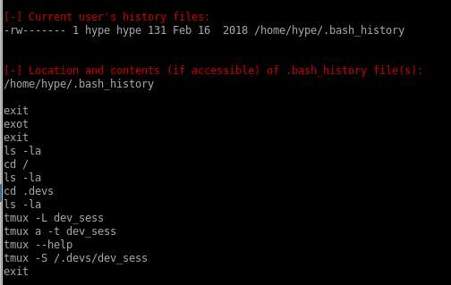
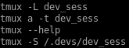

Index
notes
Linux Kernel was from back in 2012 which means plenty of linux exploits probably work for privesc on this machine, mainly DirtyCow:
We have a bash history that we can see what the user hype was up to:

the tmux commands stand out since the -S flag means it is connecting to a tmux session potentially owned by root
